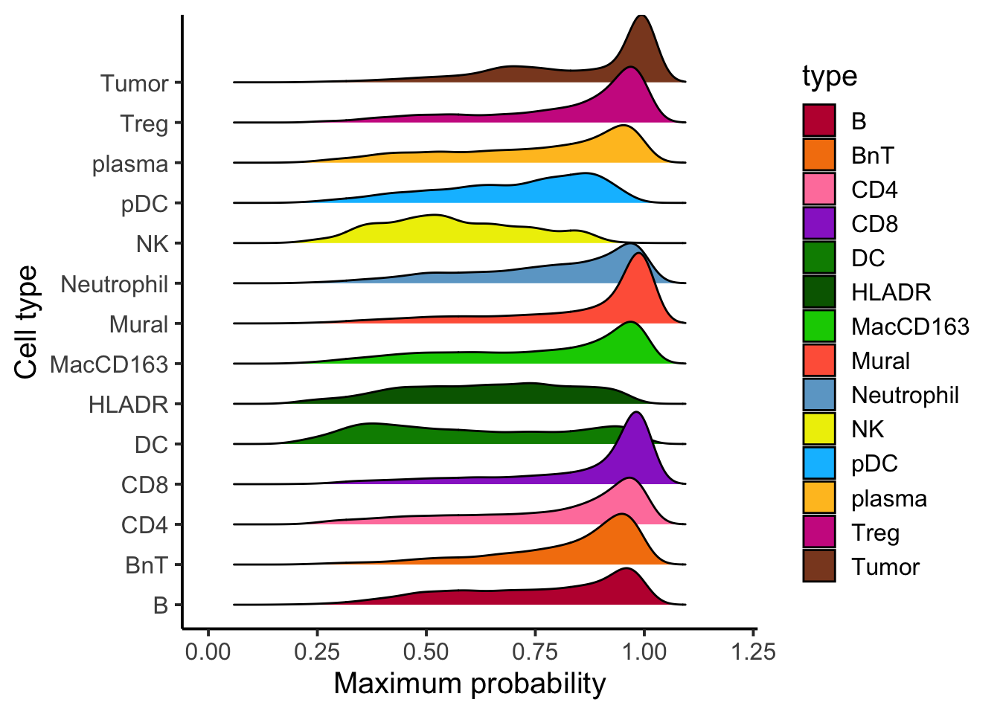
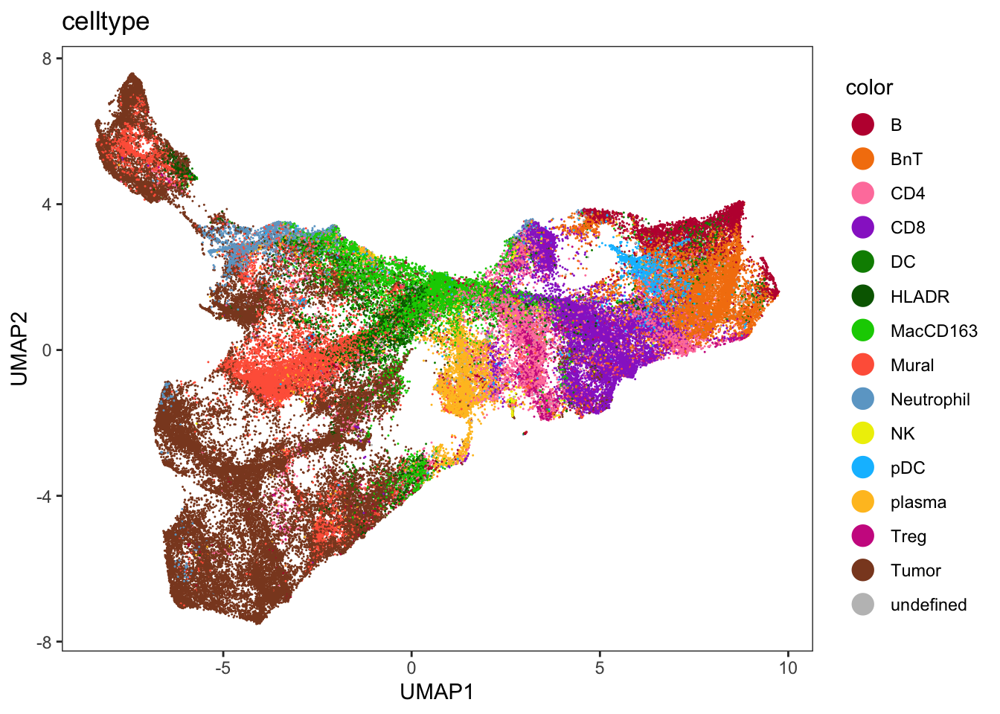
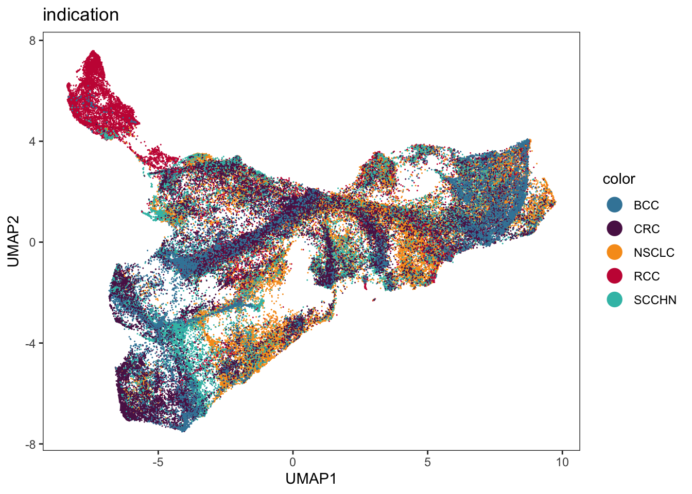
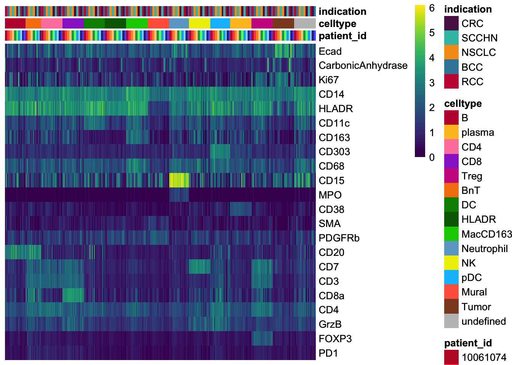
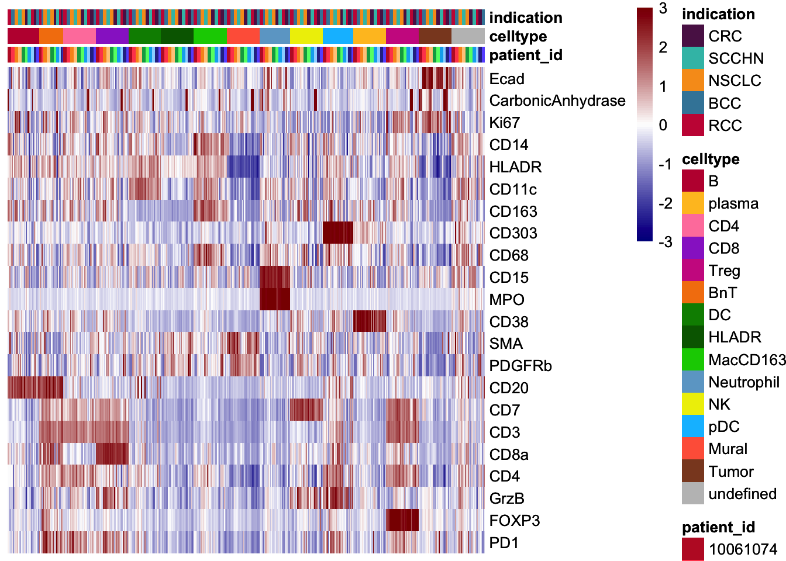

Predict cell types
Last updated: 2023-11-15
Checks: 7 0
Knit directory: IMMUcanWorkflow2021/
This reproducible R Markdown analysis was created with workflowr (version 1.7.1). The Checks tab describes the reproducibility checks that were applied when the results were created. The Past versions tab lists the development history.
Great! Since the R Markdown file has been committed to the Git repository, you know the exact version of the code that produced these results.
Great job! The global environment was empty. Objects defined in the global environment can affect the analysis in your R Markdown file in unknown ways. For reproduciblity it’s best to always run the code in an empty environment.
The command set.seed(20231009) was run prior to running
the code in the R Markdown file. Setting a seed ensures that any results
that rely on randomness, e.g. subsampling or permutations, are
reproducible.
Great job! Recording the operating system, R version, and package versions is critical for reproducibility.
Nice! There were no cached chunks for this analysis, so you can be confident that you successfully produced the results during this run.
Great job! Using relative paths to the files within your workflowr project makes it easier to run your code on other machines.
Great! You are using Git for version control. Tracking code development and connecting the code version to the results is critical for reproducibility.
The results in this page were generated with repository version 666d2bb. See the Past versions tab to see a history of the changes made to the R Markdown and HTML files.
Note that you need to be careful to ensure that all relevant files for
the analysis have been committed to Git prior to generating the results
(you can use wflow_publish or
wflow_git_commit). workflowr only checks the R Markdown
file, but you know if there are other scripts or data files that it
depends on. Below is the status of the Git repository when the results
were generated:
Ignored files:
Ignored: .DS_Store
Ignored: .Rproj.user/
Ignored: analysis/.DS_Store
Ignored: code/.DS_Store
Ignored: code/alignment_validation/
Ignored: output/.DS_Store
Note that any generated files, e.g. HTML, png, CSS, etc., are not included in this status report because it is ok for generated content to have uncommitted changes.
These are the previous versions of the repository in which changes were
made to the R Markdown
(analysis/02.5_IMC_predict_celltypes.Rmd) and HTML
(docs/02.5_IMC_predict_celltypes.html) files. If you’ve
configured a remote Git repository (see ?wflow_git_remote),
click on the hyperlinks in the table below to view the files as they
were in that past version.
| File | Version | Author | Date | Message |
|---|---|---|---|---|
| Rmd | 666d2bb | nilseling | 2023-11-15 | Adjusted to correct spillover matrix |
| Rmd | 795672b | nilseling | 2023-10-09 | Restructured repository |
Here, we will use the previously trained random forest classifier to predict all unlabelled cells.
Load data
First, we will read in the SingleCellExperiment object and load all libraries.
library(caret)
library(scater)Warning: package 'GenomeInfoDb' was built under R version 4.3.2library(tidyverse)
library(dittoSeq)
library(viridis)
sce <- readRDS("/Volumes/G_DQBM_BB_Central$/projects/immucan/processed_data/Panel_1/2022_WORKFLOW/IMC/Rout/sce.rds")
images <- readRDS("/Volumes/G_DQBM_BB_Central$/projects/immucan/processed_data/Panel_1/2022_WORKFLOW/IMC/Rout/images.rds")
masks <- readRDS("/Volumes/G_DQBM_BB_Central$/projects/immucan/processed_data/Panel_1/2022_WORKFLOW/IMC/Rout/masks.rds")Prediction based on external pre-trained classifier
Here, we will use a pre-trained classifier to predict cell types. We will first adjust the data to match to the classifier
rffit <- readRDS("/Volumes/G_DQBM_BB_Central$/projects/immucan/processed_data/Panel_1/cell_classification/classifier_v3/rf_images_DCfix.rds")
sce$Indication <- sce$indication
sce$Indication[sce$Indication == "BCC"] <- "BREAS"
sce$Indication[sce$Indication == "CRC"] <- "GI"
sce$Indication[sce$Indication == "NSCLC"] <- "GU"
sce$Indication[sce$Indication == "RCC"] <- "HN"
sce$Indication[sce$Indication == "SCCHN"] <- "THOR"Predict cells
We will now predict all cells in the dataset
library(ggridges)
# Add dummy variables
cur_mat <- t(assay(sce, "exprs")[!grepl("DNA|Histone", rownames(sce)),])
dummies <- dummyVars(sample_id ~ Indication, data = colData(sce))
all_dummies <- predict(dummies, newdata = colData(sce))
cur_mat <- cbind(cur_mat, all_dummies)
cell_labels.class <- as.character(predict.train(rffit,
newdata = cur_mat,
type = "raw"))
names(cell_labels.class) <- rownames(cur_mat)
cell_labels.prob <- predict.train(rffit,
newdata = cur_mat,
type = "prob")
# Distribution of maximum probabilities
tibble(max_prob = rowMax(as.matrix(cell_labels.prob)),
type = cell_labels.class) %>%
ggplot() +
geom_density_ridges(aes(x = max_prob, y = type, fill = type)) +
scale_fill_manual(values = metadata(sce)$color_vectors$celltype) +
theme_classic(base_size = 15) +
xlab("Maximum probability") +
ylab("Cell type") +
xlim(c(0,1.2))Picking joint bandwidth of 0.0314
cell_labels.class[rowMax(as.matrix(cell_labels.prob)) < 0.3] <- "undefined"Store predictions in SCE object. We will not overwrite the labels of the already labelled cells.
sce$celltype <- cell_labels.class
sce$probabilities <- DataFrame(cell_labels.prob)Visualization of reduced dimensions
First, we will plot the class labels on the batch corrected tSNEs.
library(dittoSeq)
dittoDimPlot(sce, reduction.use = "UMAP_fastMNN", var = "celltype", size = 0.2) +
scale_color_manual(values = metadata(sce)$color_vectors$celltype)
dittoDimPlot(sce, reduction.use = "UMAP_fastMNN", var = "indication", size = 0.2) +
scale_color_manual(values = metadata(sce)$color_vectors$Indication)
Visualization of marker expression
Finally, we will visualize the marker expression per cell type using the classified cells.
agr_sce <- aggregateAcrossCells(sce,
ids = colData(sce)[,c("sample_id", "celltype")],
statistics = "mean")
assay(agr_sce, "exprs") <- asinh(counts(agr_sce))
colnames(agr_sce) <- paste0(agr_sce$sample_id, "_",
agr_sce$celltype)
# Define markers that were used for gating
cur_markers <- c("Ecad", "CarbonicAnhydrase", "Ki67", "CD14", "HLADR",
"CD11c", "CD163", "CD303", "CD68", "CD15", "MPO", "CD38",
"SMA", "PDGFRb", "CD20", "CD7", "CD3", "CD8a", "CD4", "GrzB", "FOXP3", "PD1")
# Non-scaled
dittoHeatmap(agr_sce[cur_markers,], assay = "exprs",
annot.by = c("patient_id", "celltype", "indication"),
cluster_rows = FALSE,
scale = "none", heatmap.colors = viridis(100), order.by = "celltype",
annotation_colors = list(patient_id = metadata(sce)$color_vectors$patient_id,
celltype = metadata(sce)$color_vectors$celltype,
indication = metadata(sce)$color_vectors$Indication))
# Centered and scaled
dittoHeatmap(agr_sce[cur_markers,], assay = "exprs",
annot.by = c("patient_id", "celltype", "indication"),
cluster_rows = FALSE, order.by = "celltype",
annotation_colors = list(patient_id = metadata(sce)$color_vectors$patient_id,
celltype = metadata(sce)$color_vectors$celltype,
indication = metadata(sce)$color_vectors$Indication),
heatmap.colors = colorRampPalette(c("dark blue", "white", "dark red"))(100),
breaks = seq(-3, 3, length.out = 101))
Define TLS and tumor patches
library(imcRtools)
sce <- patchDetection(sce, patch_cells = sce$celltype == "Tumor",
colPairName = "neighborhood", min_patch_size = 25,
img_id = "sample_id", name = "tumor_patches")
sce <- minDistToCells(sce, x_cells = !is.na(sce$tumor_patches), img_id = "sample_id")
sce$tumor_patches <- sce$distToCells <= 25
sce$tumor_patches[is.na(sce$tumor_patches)] <- FALSE
sce <- patchDetection(sce, patch_cells = sce$celltype %in% c("B", "BnT"),
colPairName = "neighborhood", min_patch_size = 25,
expand_by = 10, img_id = "sample_id", name = "CD20_patches")
plotSpatial(sce, img_id = "sample_id", node_color_by = "celltype", node_size_fix = 0.5) +
scale_color_manual(values = metadata(sce)$color_vectors$celltype)
plotSpatial(sce, img_id = "sample_id", node_color_by = "CD20_patches", node_size_fix = 0.5) 
plotSpatial(sce, img_id = "sample_id", node_color_by = "tumor_patches", node_size_fix = 0.5) 
Write out example images
Here, we will outline the cells of each cell type onto of composite images.
library(SingleCellExperiment)
library(cytomapper)
cell_types <- unique(sce$celltype)
markers <- vector(mode = "list", length = length(cell_types))
names(markers) <- cell_types
markers[["B"]] <- c("CD20", "CD3")
markers[["BnT"]] <- c("CD20", "CD3")
markers[["plasma"]] <- c("CD38")
markers[["T_cell"]] <- c("CD3", "CD20")
markers[["CD4"]] <- c("CD4", "CD8a", "FOXP3")
markers[["CD8"]] <- c("CD4", "CD8a", "FOXP3")
markers[["Treg"]] <- c("CD4", "CD8a", "FOXP3")
markers[["DC"]] <- c("CD11c", "CD163", "CD68")
markers[["MacCD163"]] <- c("CD11c", "CD163", "CD68")
markers[["HLADR"]] <- c("CD11c", "CD163", "HLADR")
markers[["Neutrophil"]] <- c("CD15", "MPO")
markers[["NK"]] <- c("CD7", "CD3")
markers[["pDC"]] <- c("CD303")
markers[["Mural"]] <- c("SMA", "PDGFRb")
markers[["Tumor"]] <- c("Ecad", "CarbonicAnhydrase")
markers[["undefined"]] <- c("DNA1")
patches <- vector(mode = "list", length = 2)
names(patches) <- c("tumor_patches", "CD20_patches")
patches[["tumor_patches"]] <- c("Ecad", "CarbonicAnhydrase")
patches[["CD20_patches"]] <- c("CD20", "CD3")Normalize the images.
images <- normalize(images, separateImages = TRUE)
images <- normalize(images, separateImages = TRUE,
inputRange = c(0, 0.2))Now, we will loop through the cell-types and indication.
if (!dir.exists("/Volumes/G_DQBM_BB_Central$/projects/immucan/processed_data/Panel_1/2022_WORKFLOW/IMC/Rout/CellTypeValidation/")) {
dir.create("/Volumes/G_DQBM_BB_Central$/projects/immucan/processed_data/Panel_1/2022_WORKFLOW/IMC/Rout/CellTypeValidation/")
}
for(j in unique(sce$celltype)){
cur_sce <- sce[,sce$celltype == j]
cur_markers <- markers[[j]]
if(dim(cur_sce)[2] == 0) {
next(j)
}
if (length(cur_markers) == 1) {
cur_col <- "red"
names(cur_col) <- j
cur_col <- list(cur_col)
names(cur_col) <- "celltype"
plotPixels(image = images,
object = cur_sce,
mask = masks,
cell_id = "ObjectNumber",
img_id = "sample_id",
colour_by = cur_markers,
outline_by = "celltype",
image_title = list(text = names(images),
cex = 1),
colour = cur_col,
save_plot = list(filename = paste0("/Volumes/G_DQBM_BB_Central$/projects/immucan/processed_data/Panel_1/2022_WORKFLOW/IMC/Rout/CellTypeValidation/",
j, ".png")))
} else {
plotPixels(image = images,
object = cur_sce,
mask = masks,
cell_id = "ObjectNumber",
img_id = "sample_id",
colour_by = cur_markers,
outline_by = "celltype",
image_title = list(text = names(images),
cex = 1),
save_plot = list(filename = paste0("/Volumes/G_DQBM_BB_Central$/projects/immucan/processed_data/Panel_1/2022_WORKFLOW/IMC/Rout/CellTypeValidation/",
j, ".png")))
}
}
for (j in c("tumor_patches", "CD20_patches")) {
if (j == "tumor_patches") {
cur_sce <- sce[,sce[[j]]]
} else {
cur_sce <- sce[,!is.na(sce[[j]])]
}
cur_markers <- patches[[j]]
# when only few images are present and a certain celltypes does not exist an empty cur_sce object is created which cannot be processed.
if(dim(cur_sce)[2] == 0) {
next(j)
}
cur_sce[[j]] <- 1
if (length(cur_markers) == 1) {
plotPixels(image = images,
object = cur_sce,
mask = masks,
cell_id = "ObjectNumber",
img_id = "sample_id",
colour_by = cur_markers,
outline_by = j,
image_title = list(text = names(images),
cex = 1),
save_plot = list(filename = paste0("/Volumes/G_DQBM_BB_Central$/projects/immucan/processed_data/Panel_1/2022_WORKFLOW/IMC/Rout/CellTypeValidation/",
j, ".png")))
} else {
plotPixels(image = images,
object = cur_sce,
mask = masks,
cell_id = "ObjectNumber",
img_id = "sample_id",
colour_by = cur_markers,
outline_by = j,
image_title = list(text = names(images),
cex = 1),
save_plot = list(filename = paste0("/Volumes/G_DQBM_BB_Central$/projects/immucan/processed_data/Panel_1/2022_WORKFLOW/IMC/Rout/CellTypeValidation/",
j, ".png")))
}
}Define matched cell types
To compare to mIF data, we will need to harmonize the cell types.
matched_celltype <- sce$celltype
matched_celltype[matched_celltype %in% c("plasma", "HLADR", "Mural", "pDC", "NK", "undefined")] <- "other"
matched_celltype[matched_celltype %in% c("Treg", "CD4", "CD8")] <- "T"
matched_celltype[matched_celltype == "TumorKi67"] <- "Tumor"
sce$matched_celltype <- matched_celltypeSave RDS
saveRDS(sce, "/Volumes/G_DQBM_BB_Central$/projects/immucan/processed_data/Panel_1/2022_WORKFLOW/IMC/Rout/sce.rds")TODO Save out data
For cell type comparison I will now write out the x/y cooridnates and cell labels for the IMC and mIF data.
for (i in unique(sce$sample_id)) {
cur_sce <- sce[,sce$sample_id == i]
write_tsv(as.data.frame(colData(cur_sce)), paste0("/Volumes/GoogleDrive/My Drive/IMMUcan_workflow/data/comparisons/data_for_comparisons/IMC/cells/", i, ".tsv"))
}
sessionInfo()R version 4.3.1 (2023-06-16)
Platform: x86_64-apple-darwin20 (64-bit)
Running under: macOS Big Sur 11.7.10
Matrix products: default
BLAS: /Library/Frameworks/R.framework/Versions/4.3-x86_64/Resources/lib/libRblas.0.dylib
LAPACK: /Library/Frameworks/R.framework/Versions/4.3-x86_64/Resources/lib/libRlapack.dylib; LAPACK version 3.11.0
locale:
[1] en_US.UTF-8/en_US.UTF-8/en_US.UTF-8/C/en_US.UTF-8/en_US.UTF-8
time zone: Europe/Zurich
tzcode source: internal
attached base packages:
[1] stats4 stats graphics grDevices utils datasets methods
[8] base
other attached packages:
[1] cytomapper_1.14.0 EBImage_4.44.0
[3] imcRtools_1.8.0 SpatialExperiment_1.12.0
[5] ggridges_0.5.4 viridis_0.6.4
[7] viridisLite_0.4.2 dittoSeq_1.14.0
[9] lubridate_1.9.3 forcats_1.0.0
[11] stringr_1.5.0 dplyr_1.1.3
[13] purrr_1.0.2 readr_2.1.4
[15] tidyr_1.3.0 tibble_3.2.1
[17] tidyverse_2.0.0 scater_1.30.0
[19] scuttle_1.12.0 SingleCellExperiment_1.24.0
[21] SummarizedExperiment_1.32.0 Biobase_2.62.0
[23] GenomicRanges_1.54.1 GenomeInfoDb_1.38.1
[25] IRanges_2.36.0 S4Vectors_0.40.1
[27] BiocGenerics_0.48.1 MatrixGenerics_1.14.0
[29] matrixStats_1.1.0 caret_6.0-94
[31] lattice_0.22-5 ggplot2_3.4.4
[33] workflowr_1.7.1
loaded via a namespace (and not attached):
[1] fs_1.6.3 bitops_1.0-7
[3] sf_1.0-14 httr_1.4.7
[5] RColorBrewer_1.1-3 tools_4.3.1
[7] utf8_1.2.4 R6_2.5.1
[9] DT_0.30 HDF5Array_1.30.0
[11] rhdf5filters_1.14.0 withr_2.5.2
[13] sp_2.1-1 gridExtra_2.3
[15] archive_1.1.5 cli_3.6.1
[17] labeling_0.4.3 sass_0.4.7
[19] nnls_1.5 randomForest_4.7-1.1
[21] proxy_0.4-27 systemfonts_1.0.5
[23] svglite_2.1.2 parallelly_1.36.0
[25] rstudioapi_0.15.0 generics_0.1.3
[27] vroom_1.6.4 Matrix_1.6-1.1
[29] ggbeeswarm_0.7.2 fansi_1.0.5
[31] abind_1.4-5 terra_1.7-55
[33] lifecycle_1.0.4 whisker_0.4.1
[35] yaml_2.3.7 rhdf5_2.46.0
[37] recipes_1.0.8 SparseArray_1.2.2
[39] grid_4.3.1 promises_1.2.1
[41] crayon_1.5.2 shinydashboard_0.7.2
[43] beachmat_2.18.0 cowplot_1.1.1
[45] magick_2.8.1 pillar_1.9.0
[47] knitr_1.45 RTriangle_1.6-0.12
[49] rjson_0.2.21 future.apply_1.11.0
[51] codetools_0.2-19 glue_1.6.2
[53] getPass_0.2-2 V8_4.4.0
[55] data.table_1.14.8 vctrs_0.6.4
[57] png_0.1-8 gtable_0.3.4
[59] cachem_1.0.8 gower_1.0.1
[61] xfun_0.40 S4Arrays_1.2.0
[63] mime_0.12 prodlim_2023.08.28
[65] tidygraph_1.2.3 survival_3.5-7
[67] timeDate_4022.108 pheatmap_1.0.12
[69] iterators_1.0.14 hardhat_1.3.0
[71] units_0.8-4 lava_1.7.2.1
[73] ellipsis_0.3.2 ipred_0.9-14
[75] nlme_3.1-163 bit64_4.0.5
[77] rprojroot_2.0.4 bslib_0.5.1
[79] irlba_2.3.5.1 svgPanZoom_0.3.4
[81] vipor_0.4.5 KernSmooth_2.23-22
[83] rpart_4.1.21 colorspace_2.1-0
[85] DBI_1.1.3 raster_3.6-26
[87] nnet_7.3-19 tidyselect_1.2.0
[89] processx_3.8.2 curl_5.1.0
[91] bit_4.0.5 compiler_4.3.1
[93] git2r_0.32.0 BiocNeighbors_1.20.0
[95] DelayedArray_0.28.0 scales_1.2.1
[97] classInt_0.4-10 callr_3.7.3
[99] distances_0.1.9 tiff_0.1-11
[101] digest_0.6.33 fftwtools_0.9-11
[103] rmarkdown_2.25 XVector_0.42.0
[105] htmltools_0.5.6.1 pkgconfig_2.0.3
[107] jpeg_0.1-10 sparseMatrixStats_1.14.0
[109] highr_0.10 fastmap_1.1.1
[111] rlang_1.1.2 htmlwidgets_1.6.2
[113] shiny_1.7.5.1 DelayedMatrixStats_1.24.0
[115] farver_2.1.1 jquerylib_0.1.4
[117] jsonlite_1.8.7 BiocParallel_1.36.0
[119] ModelMetrics_1.2.2.2 BiocSingular_1.18.0
[121] RCurl_1.98-1.13 magrittr_2.0.3
[123] GenomeInfoDbData_1.2.11 Rhdf5lib_1.24.0
[125] munsell_0.5.0 Rcpp_1.0.11
[127] stringi_1.7.12 pROC_1.18.4
[129] ggraph_2.1.0 zlibbioc_1.48.0
[131] MASS_7.3-60 plyr_1.8.9
[133] parallel_4.3.1 listenv_0.9.0
[135] ggrepel_0.9.4 graphlayouts_1.0.1
[137] splines_4.3.1 hms_1.1.3
[139] locfit_1.5-9.8 ps_1.7.5
[141] igraph_1.5.1 reshape2_1.4.4
[143] ScaledMatrix_1.10.0 evaluate_0.23
[145] tzdb_0.4.0 foreach_1.5.2
[147] tweenr_2.0.2 httpuv_1.6.12
[149] polyclip_1.10-6 future_1.33.0
[151] ggforce_0.4.1 rsvd_1.0.5
[153] xtable_1.8-4 e1071_1.7-13
[155] later_1.3.1 class_7.3-22
[157] beeswarm_0.4.0 timechange_0.2.0
[159] globals_0.16.2 concaveman_1.1.0